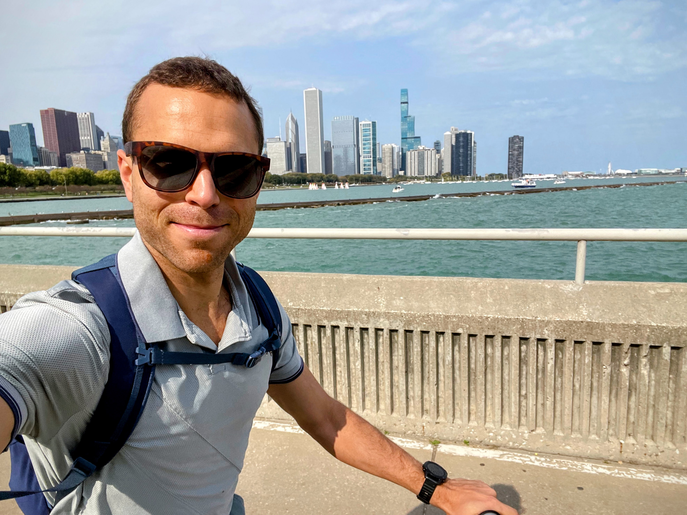

About Me
I am a
Introduction
I'm Aaron Doucett, a data visualization and geospatial engineer based in St. Louis. Over the past decade I've worked across GIS, Earth observation, and the web — from environmental and urban-planning work to building interactive maps and data tools.
This site is where I keep my maps, projects, and photography. Take a look around.
My Story
I grew up surrounded by the landscapes of Western Massachusetts, where I developed a love for exploring nature. After graduating from UMass Amherst with a degree in Earth Systems, I moved to the Greater Boston area, where I spent a decade building my career in geospatial technology and SaaS platforms.
Outside of work, I've played jazz piano for years and shoot photography. Endurance sports are a big part of my life too — I'm an avid cyclist and runner.
After a decade in Boston, I moved to St. Louis, where I'm now based.

My Journey
UMass Amherst
Graduated with a B.Sc in Earth Systems, focusing on GIS and Remote Sensing — laying the foundation for my career in geospatial technology.
A Decade in Boston
Built my career in the Boston tech scene, moving from environmental consulting to marketing and sales engineering roles at innovative startups and industry leaders.
Marathon Milestones
Completed three marathons in 2024 — Boston, Chicago, and Indianapolis — achieving a personal best of 2:52:16.
Planet Labs, St. Louis
Joined Planet Labs in St. Louis as a Sr. Data Visualization Engineer, building tools that bring satellite imagery and geospatial data to life.